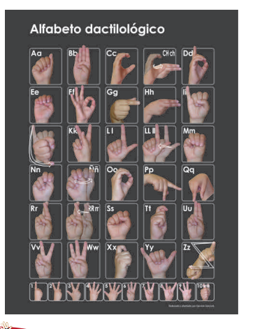

Visión por computador
Reconocimiento en tiempo real del alfabeto de la Lengua de Señas Boliviana
Josue Rinaldi CartagenaIngeniería de Inteligencia ArtificialUniversidad Católica Boliviana, Santa Cruz
Capítulo 1
No existe una lengua de señas universal: cada comunidad sorda desarrolla la suya.
personas sordas en el mundo
lenguas de señas distintas
vive en países en desarrollo
Fuente: Naciones Unidas y Federación Mundial de Sordos (WFD)
Capítulo 2 · La lengua elegida
Alfabeto dactilológico del Módulo 1 del Ministerio de Educación de Bolivia (2010).
letras de pose fija reconocidas
con movimiento (CH, J, LL, Ñ, RR, Z): trabajo futuro

Imagen: Ministerio de Educación de Bolivia (2010)
Capítulo 3
Para las etiquetas se eligieron palabras aimaras cortas, con letras fáciles de señalar y sin las letras que el modelo confunde más.
Palabras: Vocabulario Aymara (aymaraclub.com) y Lengua Aymara (pueblosoriginarios.com); elegidas por sus letras, por validar con un hablante. Hablantes: INE, Censo 2024, según Eju.tv (2025).
Capítulo 4
sobre una pantalla azul
mano recortada por color de piel
blanco, café y negro
24 letras × 300 más sin letra
Teachable Machine, ONNX e interfaz
imágenes en total
imágenes por letra
fotos reales sobre azul en cada letra, más 80 por cada fondo
Timelapse del proceso real
Preparación del conjunto de imágenes en Teachable Machine, con el alfabeto del Minedu como referencia.
Capítulo 5
Antes · cuadros casi idénticos, un solo fondo
Después · fondos, tamaños y posiciones distintos
La E tenía 670 imágenes y el modelo respondía E a todo. Ahora cada letra tiene 300.
E, A, S, K, M, N, O, C, P y T usan primeros planos para ver mejor los dedos.
Contraste local y enfoque solo sobre la mano, sin dedos cortados.
Capítulo 6 · Demostración en vivo
de acierto en fotos originales, que se usaron para entrenar. Falta medirlo con cámara real.
Manos que hablan · Josue Rinaldi Cartagena
josuecartagena0415@gmail.com
Trabajo futuro